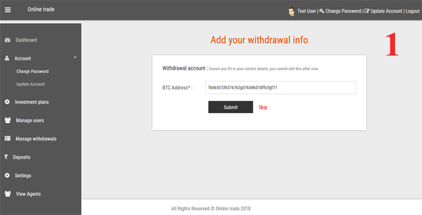
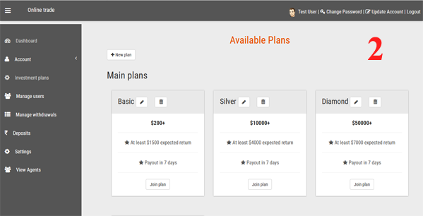
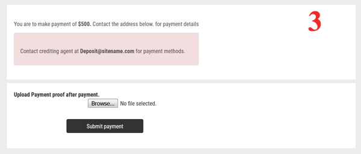

Online Trade Documentation v1.0
Created: 05/22/2018
By: Brynamics
support@brynamics.xyz
Thank you for purchasing Online Trade. If you have any questions that are beyond the scope of this help file, please feel free to email us via our user page contact form here. Thanks so much!
Table of Contents
A) Online Trade at glance - top
Online Trade Is an online forex and cryptocurrencies Investment system. Online Trade makes it easy for you to run your own online investment system within minutes. It is a full responsive & dynamic investment Platform Made with Laravel Framework. Its this easy to get started with your own Investment website.
B) How it works - top
There is a lot of people out there that is looking for how to make money online through forex and or cryptocurrency trading. If you have knowledge about online trading, you can make it easy for novice to earn from it as well and thereby be able to get a lot of trading capital for your self to trade confortably.
After a user registers, he is expected to provide his bank account details (used for receiving payment), bitcoin or ethereum wallet address as determined by the admin. The user is then expected to join an investment plan. Thereafter, the user will be directed to payment page to make payment in bitcoin to the admin or contact admin via email for more payment methods.


After a user has made payments, he is expected to upload payment proof for admin to confirm. After confirmation, the user's account will then be open for trade and earnings will be calculated by be system and be credited to his account daily, weekly or monthly as determined by admin Also, earnings are calculated in percentage as specified by the admin.
After the trade circle, the user will be able to make withdrawal of his earnings.
C) Online Trade features - top
Referal System
This enables members to refer others to the system and earn a percentage specified by the admin. Every user is assigned a Referal link upon registeration, and this link can be pasted on the web, in articles, forums and blog post to refer new users. The system automatically records refered users and calculates earnings for the referee accordingly.

Trading Chat
Real time trading chart available on user dashboard.

Deposit history
The system also keep track of users deposit history (transaction log).

Manage investment plans
Admin can create, update and delete investment plans.

More
- Secure Database with input escaping so no SQL Injection!
- Protects against CSRF attacks!
- Standard passwords encryption.
- SEO friendly URLs.
- Informative USER Panel.
- Deposit history.
- withdrawal history.
- Earning history.
- Smooth and proper routing.
- Support system.
- Referal system.
- Admin specify currency.
- Admin send notification to user dashboard.
- Admin create and edit plans.
- Admin manage withdrawals.
- Admin manage deposits.
- Admin manage users.
- Manually stop trade.
- Block and unblock user.
- Live chat system.
- Fully responsive design.
- Admin can setup website from dashboard.
- Live trading charts.
- Customers testimonials.
- Withdrawal and deposit methods.
D) Getting started with demo - top
Its easy to test this software online from our server following the steps below
- visit http://trade.brynamics.xyz
- supply Email: test1234@happ.com and password: test123 for user. While admin dashboard is Email test123@happ.com and password test123
- click on login to access dashboard.
E) Online Trade Installation - top
To install Online Trade on online server, follow the steps below:
- Ensure your server supports PHP 7.0 and above and mysql 5.X
- Upload and extract project files to your desired directory.
- Create your database and import the SQL file in Online Trade root folder.
- Update .env file with your database information.
- Copy the content of the public folder to root folder and delete public folder.
- Open index.php file and edit following line to of code from require __DIR__.'/../bootstrap/autoload.php'; to require __DIR__.'/bootstrap/autoload.php';. Do thesame to other place where that code appear. (Usually two places). Congratulations ! you are done.
F) Admin Dashboard - top
The Dasboard is responsive and gives the administrator option to setup the website, manage users and users activities To access admin use the login with the admin credentials provided above.
G) User Dashboard - top
The Dasboard is responsive and gives the user information about his account and also to manage his account and see ongoing activities. To access the user dashboard, use the login with the user credentials provided above.
H) Settings - top
This is where you provide setup information such as website name and title, description, set up currency, send notification to users, pause and start trade. e.t.c.
Once again, thank you so much for purchasing Online Trade . As I said at the beginning, I'd be glad to help you if you have any questions relating to this product. No guarantees, but I'll do my best to assist. If you have a more general question relating to the products on Codecanyon, you might consider visiting the forums and asking your questions in the "Item Discussion" section.
Best Regards.
© 2018 Online Trade